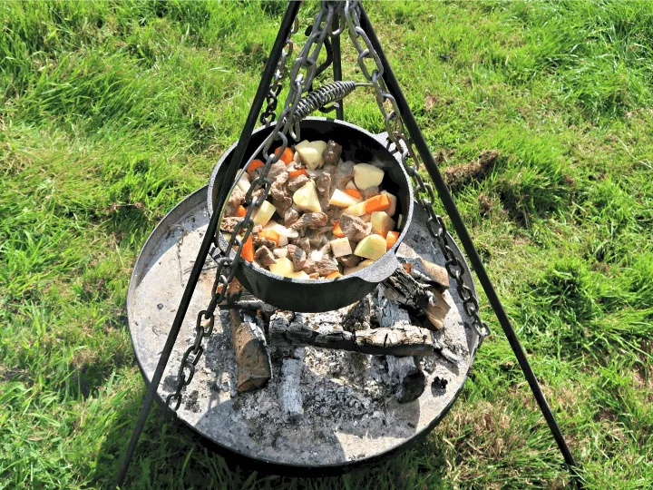

Radstag Stew

This homemade dish is a delectable blend of Wasteland vegetables, Radstag meat and grain alcohol. +30 energy resist for 1 hour!
Ingredients
- 1 lbs Radstag meat
- 1 oz gourd
- 2 oz silt bean, fresh or tinned
- 16 fl oz vodka
Steps
- Chop gourd and silt bean into medium sized chunks
- Chunk and rinse Radstag meat and innards
- Combine all ingredients in pot, heat on med-high til lightly browned
- Turn down heat to low and simmer for 4-6 hours
- Slowly stir in vodka and simmer until juices thicken and vegetables are soft